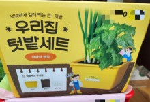

경제 뉴스
"주방세제도 본사한테만 사" 강요한 파파존스피자 과징금 14.8억
가맹점주에게 시중에서 파는 주방세제를 비싼 가격으로 본사에서 사도록 강요하고 리모델링 비용도 떠넘긴 한국파파존스가 공정거래위원회 제재를 받게 됐다. 공정위는 14억 원이 넘는 과징금을 부과했는데 이는 가맹사업법으로 처벌된 건 중 두 번째로 높은 금액이다.
공정위는 파파존스 본사에 대해 가맹거래법 위반 혐의로 시정명령과 과징금 14억8,200만 원을 부과한다고 24일 밝혔다. 공정위는 필수품목 강제행위에만 10억4,400만 원의 과징금을 부과했다. 이는 필수품목 강제 행위 제재 중 역대 최대 금액이다.
공정위 조사에 따르면 파파존스 본사는 2015년 7월부터 현재까지 가맹점주에게 각종 세척용품을 ‘필수품목’으로 지정해 비싼 가격에 강매했다. 점주가 구매해야만 했던 필수품목은 총 15개로 손 세정제와 주방세제, 기름때 제거제 등이다. 이는 시중에서 구매할 수 있는 제품과 큰 차이가 없었다. 하지만 파파존스 본사는 여기에 8.2~69.2%에 달하는 마진을 붙여 팔아 총 5억4,700만 원의 매출을 올렸다. 공정위는 본사가 강매한 세척용품이 맛이나 품질과 직접적인 관련이 없고 시중에서도 구할 수 있다는 점을 지적했다.
리모델링 비용도 가맹점주에게 떠넘겼다. 본사는 가맹계약일로부터 10년이 넘는 매장 25곳에 리모델링을 강요했지만 법에서 정한 본사 부담 비용(20%)을 내지 않았다. 공사비용 10억6,800만 원 중 2억1,300만 원을 가맹점주에게 전가시킨 것이다. 류수정 공정위 가맹거래조사팀장은 “과도한 필수품목 지정행위는 근절돼야 한다”며 “매장 리모델링으로 인한 가맹점주의 영업이익 증가는 가맹 본사의 이익과 직결되기 때문에 합리적으로 분담돼야 한다”고 말했다.
조소진 기자
랭킹뉴스
분야별뉴스
- 경제
- 포스코인터, 농협사료와 협력 강화…"식량안보 정부 정책 부응"
- 사회
- 한동훈 "여야의정 협의체에 의료계 참여…결단에 감사"
- TV/연예
- [공식]백종원, 요리하는 돌아이x철가방 요리사 재회…'레미제라블' 30일 첫방송
사진뉴스
| 1 | 펄펄 끓는 도시, '녹지 공간' 중요하다 | |
| 2 | 채소값 폭등에 가꿔보는 미니텃밭…`우리집 텃밭세트` |  |
| 3 | 카톡처럼 국민앱 될까…카카오 비밀병기 ‘카나나’ 뭐길래 |